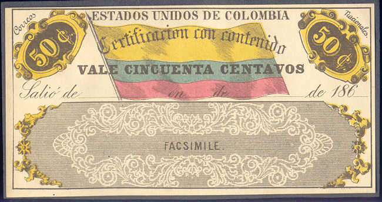

COLOMBIA Insured letter stamps and Postal
stationery
Return To Catalogue -
Colombia
Note: on my website many of the
pictures can not be seen! They are of course present in the
catalogue;
contact me if you want to purchase it.
Insured letter stamps
In 1865 the first insured letter stamps appeared
in the values 25 c and 50 c both in the colours brown, yellow,
blue and red.

This might be a forgery made by Senf of
a 1865 issue, with inscription 'FACSIMILE.'

An advertisement for these 'Facsimiles' from Senf, where a set of
10 facsimiles are offered for a price of 2 Mark. It includes the
25 c and 50 c 1865 issue, the 50 c 1867 issue, the 50 c 1870
issue for Colombia. Also the 5 c, 10 c and 50 c of the 1879 issue
and the 5 c, 10 c, and 50 c of the 1886 issues of Tolima were included.
Another value was issued in 1867: 50 c black,
yellow, blue and red, followed by another one in 1870 (50 c
black, red, blue and yellow; 2 types).
(1870 issue, 50 c black, red, blue and yellow, reduced size)
The following design with inscription
'Certificacion con contenido' appeared first in 1883; 50 c red. A
slightly different design (inscription 'REPUBLICA DE COLOMBIA'
was issued in 1884: 50 c red. More values in the colour blue were
issued in 1889: 10 c, 20 c, 30 c, 40 c, 50 c, 60 c, 70 c, 80 c,
90 c and 1 P.
1889 1 P blue
In 1890 a new set followed with inscription
'VALOR DECLARADO' at the right hand side. The following values
were issued: 10 c black onred, 20 c black on yellow, 30 c black
on orange, 40 c black on blue, 50 c black on green, 60 c yellow,
70 c blue, 80 c green, 90 c brown and 1 P red.
1890 1 P red issue
Other designs and values exist and were issued up
to 1905.
Postal Stationary
Examples:
Inscription 'SERVICIO POSTAL FERREO', railway postal stationary
I've seen a similar card 5 c (identical design)
on blue with inscription 'Servicio Postal Fluvial' with a picture
of a boat next to the 'stamp'.
2 c black postal stationary with arms
Piece of an envelope with 'OFICIO' overprint, equivalent to a
'specimen' overprint
Copyright by Evert Klaseboer